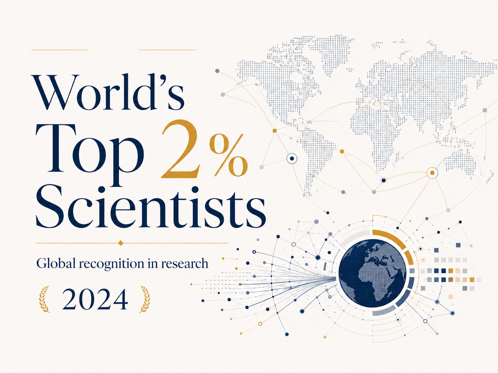

A/P Rosa ranked among the world's top 2% most-cited scientists (2024)
Recognised for the fourth consecutive year in the Stanford–Elsevier ranking of the world's most-cited scientists, based on Scopus bibliometric data across all disciplines.
A/P Rosa has been listed for the fourth consecutive year among the world's top 2% most-cited scientists, in the 2024 edition of the ranking compiled by Stanford University and Elsevier.
Among the world's top 2% most-cited scientists.
The ranking draws on Scopus bibliometric data and spans all scientific disciplines, reflecting sustained international citation impact.